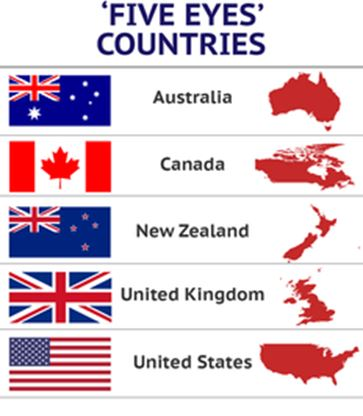

Depuis l’effondrement, programmé, de l’Union soviétique en 1991, le monde qui apparemment s’ordonnançait jusqu’alors entre deux pôles antagonistes, Washington contre Moscou, le libéralisme contre le marxisme, la « liberté contre l’oppression » etc. se trouva tout à coup univoque, unipolaire et pour tout dire sorti de l’Histoire comme avait pu le penser Fukuyama.
Le principe de vie détestant l’unipolarité - relisons Hegel - repose toujours sur une dualité, une dialectique, ainsi que serait la vie sans la mort, le bien sans le mal, le plus sans le moins, le Yin sans le Yang etc.
J’avoue avoir cherché et attendu depuis cet effondrement géopolitique majeur, la résurgence d’une pensée alternative à l’idéologie du Système et le moins que l’on puisse dire est que l’encéphalogramme semble désespérément plat. Bien évidemment, les penseurs du Système sont parfaitement conscients de cet état de fait et ils savent aussi qu’ils ont besoin d’une altérité – on ne se pose qu’en s’opposant – et c’est pourquoi le Système s’est façonné un ennemi, le terrorisme islamique1, figure commode, à la fois virtuelle et réelle, qui autorise et légitime toutes les guerres de conquête et de déstabilisation sur les territoires où sont présentes des communautés musulmanes, de la Chine à l’Europe, en passant par la Russie, la Birmanie, l’Indonésie, l’Iran, le proche et le Moyen-Orient, l’Afrique…
En créant ce Golem, les néo-conservateurs états-uniens, fidèles à la pensée de Carl Schmitt, désignent l’ennemi pour orienter les peuples sous leur domination idéologique vers une confrontation programmée entre les peuples « occidentaux » - c’est-à-dire adhérant à l’idéologie occidentale et les peuples vivant leur foi dans l’Islam, quelle que soit sa forme, chiite, sunnite ou autre.
Avant de partir à la recherche de ce que pourrait-être une alternative au Système2, essayons déjà de définir ce qu’il est :
Qu’est-ce que le Système ?
Il s’agit d’une oligarchie marchande née à Londres au tournant du XVIème siècle et qui sous l’inspiration de l’un de ses promoteurs, Walter Raleigh, auteur du célèbre aphorisme « Qui tient la mer tient le commerce du monde ; qui tient le commerce tient la richesse ; qui tient la richesse du monde tient le monde lui-même » inventa l’idée de la soumission des peuples, non plus seulement par la guerre, mais par tous les moyens possibles, y compris le commerce. Le parangon de cette politique fut la mise en place de la « diplomatie » de la canonnière qui existe toujours aujourd’hui mais sous des formes plus subtiles ainsi que l’a parfaitement analysé Hervé Juvin dans son remarquable petit opuscule que je vous recommande La guerre du droit pénal aura-t-elle lieu ?3
Cette oligarchie a prospéré au fil des siècles et forte de la puissance financière qu’elle s’est donnée4, se sert des Etats qu’elle a subjugués ou conquis pour faire avancer ses pions et progresser vers le but ultime qui est la création de ce gouvernement mondial qu’ils tentent par tous les moyens d’imposer5.
La meilleure façon de dissimuler quelque chose consistant à l’étaler sous vos yeux, l’oligarchie anglo-saxonne a choisi une idée simple pour faire avancer son projet en appliquant le principe de la conspiration ouverte (open conspiracy) tel que l’a théorisé l’auteur de science-fiction britannique H.G Wells.
Cette excellente méthode permet de stigmatiser les adeptes du complotisme en sciant l’argument premier du secret et de la dissimulation qui définit le complot. Il n’y a pas de complot puisque les sectateurs de la gouvernance mondiale ne se cachent pas et même, revendiquent fièrement leur volonté de « gouvernance mondiale ».
Enfin, pour achever de manière négative la définition du Système, que l’on pourrait appeler plus justement l’idéologie anglo-saxonne, je réfute les arguments de ceux qui pensent que le Système serait animé par une idéologie juive. D’abord parce que le monde juif est infiniment plus complexe et fragile que ne le pensent généralement les antisémites primaires et ensuite parce que la simple observation de cette conspiration ouverte montre que si des Juifs sont présents parmi celle-ci, elle comprend également des catholiques, des orthodoxes, des protestants, des musulmans, des shintoïstes, des bouddhistes, des animistes, des athées, des gnostiques, des libres penseurs...
Bref, ce qui définit les adeptes du Système ce n’est pas l’appartenance à une religion ou une spiritualité quelconque, c’est l’adhésion totale à une caste et à son principe existentiel : la mise en esclavage de l’humanité sous leur férule, et avec un moyen simple comme l’œuf de Collomb : la servitude par la dette. Dette des Etats, dettes des entreprises ou des collectivités, dettes des individus, l’accumulation abyssale de ces trilliards d’euros ou de dollars dus à des entités largement anonymes6 est le principal vecteur du Système pour nous enchaîner de manière irrémédiable. Le suffixe « diable » étant le mot ad hoc.
Ayant défini sommairement le Système et son but, quelle pourrait, devrait être l’alternative à celui-ci ?
Quelle alternative contre le Système ?
Les deux armes principales du Système sont la séduction et l’anathème. Elles sont utilisées aussi bien à l’échelle individuelle qu’au niveau des organisations ou des Etats souverains (Etats dits voyous). Et elle peut bien sûr mener jusqu’à l’écrasement d’un chef d’Etat et de son peuple, l’Irak et la Libye en étant des illustrations récentes. Pour les individus, la mort sociale dans un premier temps par l’ostracisme, voire la disparition pure et simple quand cela ne suffit pas.
La séduction se fait par la promesse d’abondance et de consommation sans frein et d’une pseudo liberté individuelle (« chacun fait, fait, fait, ce qui lui plaît, plaît, plaît »). Au niveau étatique, la séduction se pratique par la promesse d’une vie sociale hors normes et des avantages qui en découlent pour la nomenklatura qui dirige et la menace d’en être exclu ou puni en cas de refus d’obéissance.
L’anathème est jeté sur toutes les personnes ou les organisations qui représentent un danger ou un frein à la réussite de la fragmentation des sociétés et des peuples, condition sine qua non pour parvenir à la domination totale de l’humanité.
Ces deux armes sont redoutables et remarquablement efficaces. La promesse d’abondance maintient les classes moyennes occidentales, qui en bénéficient encore un peu, dans la conviction qu’il ne faut surtout pas changer pour des idées alternatives qui risqueraient de faire perdre le peu qui reste, mais elle agit aussi comme un aimant phénoménal pour les populations déshéritées du quart-monde à qui les tenants du mondialisme promettent le paradis sur terre après avoir organisé leur déstabilisation par la guerre ou la prédation économique et en favorisant leur émigration vers un occident mythifié dans lequel elles seront transformées en esclaves du capital et dont la force de travail vendue à bas coût permettra de mieux paupériser les sociétés autochtones.
L’anathème quant à lui procède de la mise en place de mythes incapacitants7 consistant à revêtir d’une tunique de Nessus l’adversaire idéologique afin de le vouer aux gémonies et à l’opprobre public. Pour cela, le Système crée une chaine de causalité entre les valeurs traditionnelles et inverse leur sens en les polarisant de manière négative. Ainsi, l’Eglise catholique qui est en faveur de la famille traditionnelle subit-elle des attaques sur la pédophilie, réelle ou supposée, de certains de ses membres afin de mieux promouvoir la théorie du genre. De même, cette chaîne de causalité sera utilisée aussi contre les mouvements populistes, classés à gauche ou à droite, et ils seront stigmatisés pour leur volonté de défendre les peuples contre l’oligarchie. On leur jettera alors la tunique de Nessus du nationalisme, c’est-à-dire du nazisme, donc de la Shoah etc. (reductio ad hitlerum).
L’alternative doit donc s’opérer en retournant les armes du Système contre lui et en se réappropriant l’art de la séduction et la pratique de l’anathème pour diaboliser l’ennemi.
Concernant la séduction, celle-ci s’exerce par l’exemplarité, l’attractivité et le faire-savoir, ou la propagande si vous préférez. En la matière, il faut avoir l’honnêteté de reconnaître aux Anglo-Saxons un savoir-faire indéniable. Que ce soit à Londres depuis le XIXème siècle où les bourgeoisies compradores du monde entier envoient leurs rejetons pour se former, voire se conformer à l’idéologie marchande ou à New-York qui a partiellement remplacé la matrice londonienne dans le mythe de la nouvelle Rome éclairant les nations, les Anglo-Saxons ont su créer une ambiance attractive (mode, dynamisme, originalité, tendances, futurisme, créativité, innovation…) pour drainer une bonne partie des élites mondiales et les asservir à leur cause.
Objectivement, et sauf méconnaissance de ma part, je ne connais pas un pays dans le monde qui incarnerait aujourd’hui une altérité attractive au monde anglo-saxon et susceptible de subjuguer les masses occidentales lobotomisées.
Si l’on prend les trois grands pôles qui seraient susceptibles de jouer le rôle de cette altérité, l’Inde, la Chine et la Russie, je ne crois pas que l’un d’entre eux puisse prétendre aujourd’hui, en qualité de modèle à suivre, jouer le rôle d’alternative au Système. Que ce soit par le niveau de vie de la majorité de leurs populations qui reste encore largement inférieur au niveau de vie occidental ou par le fossé culturel qui sépare la Chine et l’Inde du mode de vie occidental actuel, aucun de ces grands pays ne peut prétendre incarner une alternative radicale au Système. Et concernant la Chine et l’Inde, je doute que ces deux pays en aient la prétention.
Reste la Russie qui culturellement et géographiquement est plus proche de l’Europe occidentale sous férule atlantiste que les deux autres pays asiatiques. Toute la question est de savoir si la Russie entend jouer ce rôle d’antagonisme radical au Système, c’est-à-dire accepter d’opposer et de promouvoir une vue du monde traditionnelle en rupture avec l’idéologie marchande et délétère du monde occidental.
Objectivement, Moscou est déjà dans l’altérité, ne fut-ce que par son refus de se plier aux injonctions de l’Occident. Elle l’est aussi par le choix que semble avoir fait Vladimir Poutine en juillet dernier en donnant sa faveur au club Stolypine8 contre les libéraux de son propre gouvernement. Elle l’est encore dans la guerre qu’elle mène en Syrie contre le terrorisme instrumentalisé par l’Occident9.
Mais être dans la situation du dernier grand peuple libre du continent eurasiatique, ennemi absolu de l’Occident sous domination anglo-saxonne, ne suffit pas à se poser en pôle alternatif du Système. Et c’est là que la Russie a un rôle historique à jouer, en renouant avec ses racines chrétiennes et en se posant en adversaire idéologique résolu de la vision marchande du monde. Pour ce faire, elle va bénéficier d’une occasion inespérée d’apparaître comme un pôle de stabilité en regard d’une Europe qui ne peut que sombrer à court terme dans le chaos que provoqueront les guerres ethniques et la faillite de son modèle économique.
Mais au-delà d’une conception du monde conservatrice et chrétienne, seule alternative crédible au Système, et sachant que les peuples asservis et malades de l’Occident ne réfléchissent plus qu’à l’aune du remplissage de leur Caddie de supermarché, comment définir alors une économie alternative, saine, organique et enracinée ?
C'est avant tout une économie au service du peuple et non pour le bénéfice exclusif d'une oligarchie. De ce fait, elle est automatiquement subordonnée au pouvoir politique qui l'oriente mais ne la dirige pas, sauf dans certains secteurs cruciaux ou à certains moments historiques. Elle suit les orientations (incitations fiscales, exemptions ou réductions d'impôts, zones franches, interdictions, limites, restrictions) que lui pose l'Etat. De ce fait, elle agit librement dans un cadre donné en fonction de deux impératifs :
assurer le bien-être de la population ;
assurer les exigences stratégiques de l'Etat.
Tant que l'économie n'est pas en crise et que ces deux impératifs sont satisfaits, l'Etat n'intervient pas. Dès lors qu'un dysfonctionnement intervient, extérieur ou intérieur (prix du baril de pétrole, pénuries alimentaires, hausse du prix des matières premières ou stratégiques etc.) l'Etat use de son pouvoir régalien pour imposer les mesures qu'il juge nécessaires (baisse ou hausse des prix ou des salaires, inflation ou déflation, augmentation des droits de douanes, contrôle des changes, etc.). En conséquence, et contrairement aux exigences du Système Global, il est vital pour un Etat qui désire conserver son indépendance et sa liberté d'agir, de se désendetter et de pouvoir disposer d'une banque centrale sous son contrôle direct afin de pouvoir jouer à sa guise sur la circulation monétaire dans le pays.
Une économie orientée - et non dirigée - doit reposer sur le principe de la libre concurrence mais en respectant les valeurs et les traditions des peuples où elle est appliquée. Contrairement à ce que pensent les libéraux, tout n'est pas à vendre ou à acheter.
En conséquence l'Etat doit réglementer les secteurs où il souhaite détenir le monopole (transports publics, énergie, défense, télécommunications, médias).
Il est même souhaitable que ces secteurs restent sous le contrôle étroit et exclusif de l'Etat, notamment les télécommunications et les médias, du fait de leur utilisation potentielle comme armes stratégiques de désinformation, comme l’ont montré les révolutions de couleurs avec l’utilisation massive des réseaux sociaux et les écoutes systématiques pratiquées par les Five Eyes anglo-saxons.
Afin d'éviter un assoupissement du système inhérent à toute fonction publique et à toute administration centralisée dépourvue de concurrence, il est souhaitable d'instaurer dans ces administrations un système de rémunération au mérite (comportant des limites), géré par une commission mixte de fonctionnaires de tous grades et d'experts indépendants extérieurs à l'administration.
Pour protéger cette économie de tout choc intérieur ou extérieur, il convient de fixer un certain nombre de principes simples :
1. Tout ce que peut fabriquer ou produire le pays, sans coûts excessifs, et qui fournit de l'emploi à des salariés ou est considéré comme d'intérêt stratégique par l'Etat, doit être protégé par des droits de douane, variables selon la nature de la menace, ou être nationalisé.
2. La monnaie nationale n'est pas une marchandise et il faut restaurer le système qui la place hors du champ des spéculateurs internationaux.
3. L'Etat doit s'arroger le droit d'interdire toute société ou organisation étrangère (Soros connexion) dont l'activité peut être néfaste (sur les plans politique, économique ou culturel) pour le pays.
4. L'impôt doit être juste et équitable et toucher proportionnellement toute les classes sociales en évitant de frapper trop fort les hauts revenus ce qui risquerait de faire fuir les élites.
5. L'Etat doit se donner les moyens, même à prix exorbitant et donc non compétitif, de fabriquer ce qu'il estime nécessaire pour son indépendance et dont la perte de savoir-faire lui serait extrêmement préjudiciable. (cf. industrie spatiale, armement, numérique…).
6. Une économie organique doit favoriser le principe de fonctionnement des cercles concentriques : il faut qu'une région consomme prioritairement ce qu'elle produit (circuits courts, localisme). Si un produit n'est pas disponible dans la région concernée, c'est à la région la plus voisine de l'approvisionner. Si aucune région du pays ne produit le bien recherché, il sera importé, de préférence d'un pays avec lequel existe des accords bilatéraux d'échanges.
7. Une économie continentale ouverte sur les deux océans doit mettre en place le principe de l'autarcie des grands espaces. Le continent Eurasien, de Brest à Vladivostok, possède largement en son sein de quoi satisfaire tous ses besoins essentiels. Pour les rares denrées (café, chocolat...) ou matières premières qu'elle ne posséderait pas, ou alors en quantité insuffisante, des accords de commerce internationaux avec les pays producteurs permettront de pallier la pénurie.
Ces principes d'économie organique ne sont que de simples mesures de bon sens et ils étaient pratiqués naturellement par tous les Etats du monde avant que la maladie libérale et sa dérive libérale-totalitaire ne se répandent sur la surface de la terre. Ils pourraient être remis en place dans un débat comme alternative positive au système marchand mis en place par ceux qui visent à travers lui à s'assurer le contrôle de la planète.
Objectivement, mais lentement, la Russie semble mettre en place ces principes de bon aloi qui sont radicalement contraires à l’idéologie libérale que promeut le Système. Aura-t-elle le temps de bâtir une société exemplaire avant que le monde ne bascule dans le chaos ? C’est tout l’enjeu des temps qui viennent. Il est minuit Docteur Schweitzer…
Partager cette page